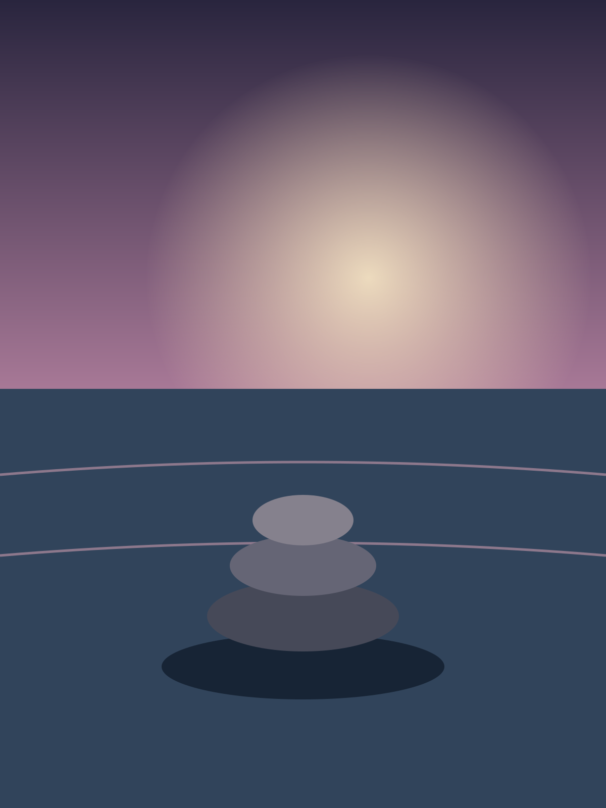
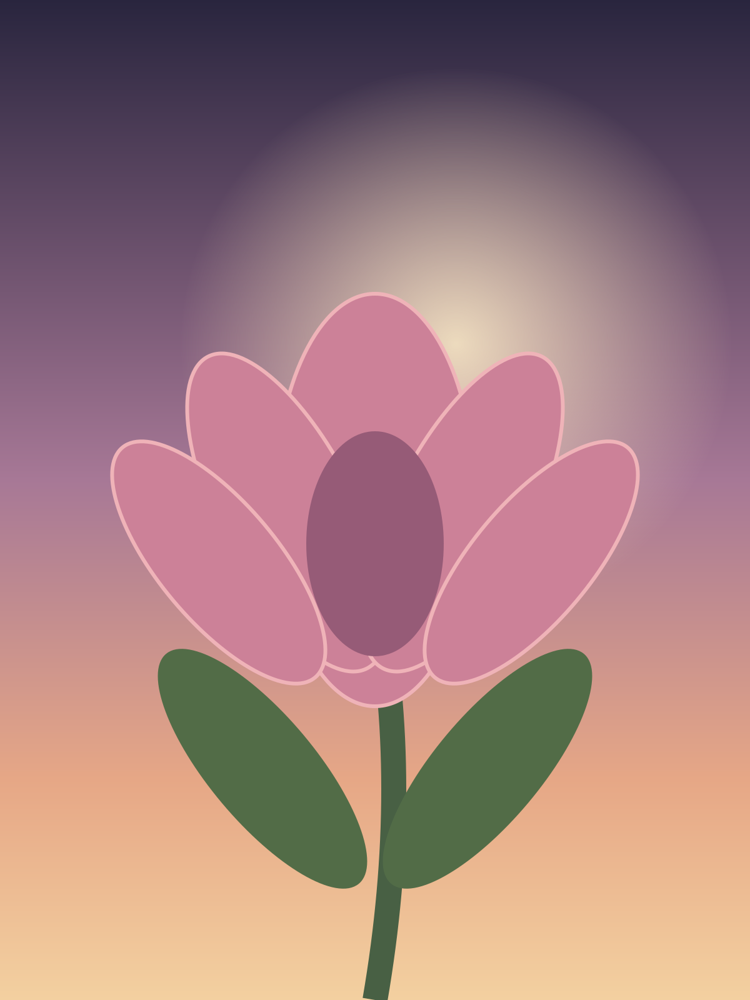

Internal visual review only. These original SVG illustrations are not Platinum-approved photographic replacements. Inspect mobile cropping, contrast, affirmation legibility, composition and theme alignment. No live card behavior is changed by this page.

